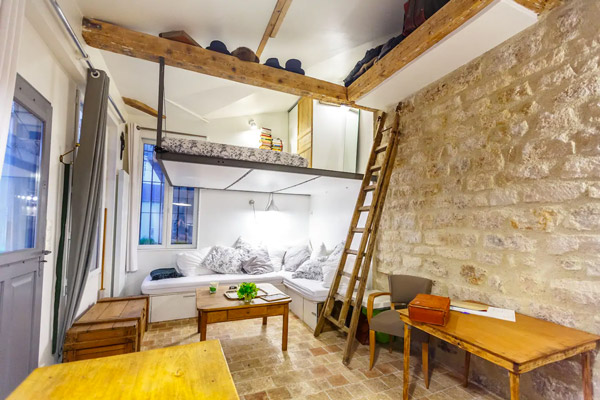
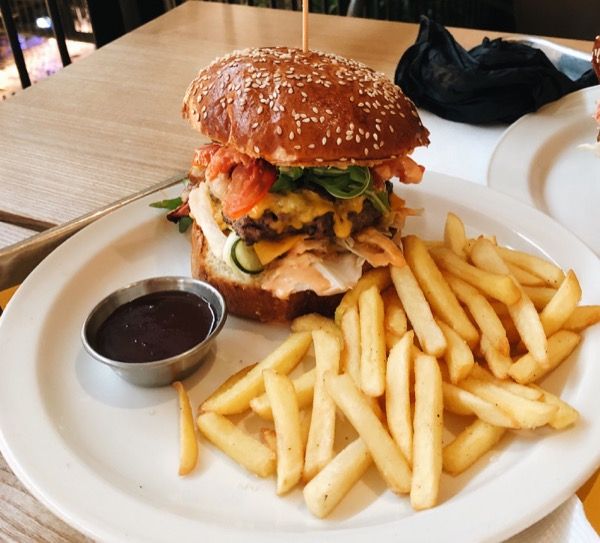

Du khách Việt Nam đang có xu hướng đi du lịch Châu Âu ngày một nhiều hơn, nhiều người lựa chọn đi theo tour trọn gói để không phải chuẩn bị quá nhiều, nhiều người lại chọn đi tự túc để có thể chủ động trong phần lịch trình của mình hơn,… Dù là đi tour hay đi tự túc du khách cũng cần nắm được những thông tin cần biết trước khi đi châu Âu hay đơn giản là trước khi lên kế hoạch đi Châu Âu.
Nhắc tới visa Châu Âu nhiều du khách nghĩ tới visa schengen nhưng thực tế không phải cứ đi châu Âu là làm visa schengen mà chỉ đi nước nào trong khu vực schengen thì mới làm visa schengen, còn lại nếu đi đến quốc gia châu Âu không thuộc khu vực schengen thì phải làm visa của nước đó theo quy định. Ví dụ: đi Nga phải làm visa Nga, đi Anh phải làm visa Anh,…
Châu Âu có hơn 200 ngôn ngữ bản địa. Mỗi người dân thường có thể nói 2 ngôn ngữ trở lên. Những ngôn ngữ phổ biến ở các quốc gia là tiếng Đức, tiếng Anh, tiếng Pháp, tiếng Tây Ban Nha,…
Từ Việt Nam (Hà Nội, TP.Hồ Chí Minh, Đà Nẵng) có một số chặng bay thẳng đến Châu Âu như đến Thổ Nhĩ Kỳ, Pháp, Đức, Séc,… Một số chặng bay sẽ quá cảnh 1-2 lần. Du khách khi đi cân nhắc lựa chọn chuyến bay phù hợp cũng như cân nhắc thời gian quá cảnh lâu hay không. Trường hợp quá cảnh lâu thì có thể tham khảo thêm các thông tin liên quan như: có phòng nghỉ trong lúc quá cảnh không? Visa quá cảnh tại nước quá cảnh,…

Chi phí du lịch Châu Âu khá đắt đỏ, trong đó lưu trú chiếm một chi phí không nhỏ. Các dịch vụ lưu trú mà du khách có thể lựa chọn là: hostel/dorm, khách sạn mini/nhà nghỉ, khách sạn,airbnb,… Tuỳ theo túi tiền mà du khách có thể lựa chọn cho mình dịch vụ lưu trú phù hợp.

Đồ ăn ở Châu Âu về cơ bản không khó ăn với người Việt. Các món ăn thường có bánh mì, súp, thịt,… Nếu đi hành trình dài ngày nhiều du khách sẽ cảm thấy thèm món ăn Việt Nam, ở một số thành phố lớn đặc biệt nơi có nhiều người Á sống thì cũng có một số nhà hàng Việt Nam.
Việc đi lại tại các nước châu Âu về cơ bản là rất tiện. Du khách có thể đi máy bay, đi tàu hoặc đi xe bus. Bên cạnh đó nếu có bằng lái quốc tế và thông thạo đường (nếu không thì có thể sử dụng các ứng dụng bản đồ chỉ đường) du khách có thể thuê xe tự lái để đi. Còn đi lại trong thành phố thì du khách có thể đi metro, tram, xe bus, taxi, dịch vụ thuê xe đạp công cộng,…
Châu Âu có rất nhiều điểm đến hấp dẫn hay nói đúng hơn mỗi quốc gia là
một điểm đến hấp dẫn du khách cân nhắc dựa trên nhu cầu của mình để chọn
điểm đến phù hợp. Các điểm đến phổ biến ở Châu Âu là: Ý, Pháp. Đức, Hà
Lan, Thuỵ Sĩ, Anh, Tây Ban Nha,…
Châu Âu là điểm đến an toàn cho du khách tuy nhiên một vấn đề thường xuyên gặp phải ở các nước châu Âu đó là nạn móc túi và lừa đảo. Thông thường đến từ những người nhập cư. Du khách tốt nhất nên để ý mọi thứ xung quanh và những tài sản cá nhân của mình để tránh bị móc túi, dàn cảnh, lừa đảo,…
Châu Âu là một trong những thiên đường mua sắm cho du khách Việt Nam,
những mặt hàng xa xỉ được rất nhiều du khách mua như đồng hồ, túi xách,
quần áo, phụ kiện thời trang,… Cùng với đó là những mặt hàng thực phẩm,
đồ lưu niệm cũng được lựa chọn. Khi mua sắm du khách cần nhắc chọn các
địa điểm uy tín, đồng thời cần tìm hiểu về chính sách hoàn thuế của đất
nước mình mua hoặc cửa hàng mình mua. Chính sách hoàn thuế ở Châu Âu có
một số hình thức như: hoàn thuế tại chổ, hoàn thuế tại sân bay,…